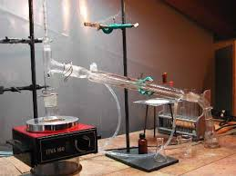

Mi accorgo che è tanto tempo che non propongo un'esterificazione di Fischer, sintesi che mi è simpatica oltre che per la sua semplicità soprattutto perchè porta spesso a prodotti odorosi, in copia alla natura.
Ho sintetizzato stavolta il propionato di n-amile per riprendere quell'abitudine di verificare olfattivamente i piacevoli olezzi degli esteri inferiori.
La reazione (non il meccanismo) è banale: si ha unione tra il radicale acido ed il radicale alcolico, chiamiamoli così, con eliminazione di acqua e formazione dell'estere.
La reazione è catalizzata dalla presenza di un po' di acido solforico concentrato.
H+
CH3-(CH2)4-OH + CH3-COOH ----> CH3-COO-(CH2)4-CH3 + H2O
Materiali occorrenti:
Acido propionico CH3-CH2-COOH
n-Pentanolo CH3-(CH2)4-OH
Acido solforico
Sodio bicarbonato NaHCO3
Apparato di distillazione (Liebig e Allhin)
Imbuto separatore
Vetreria varia
Procedimento
 -In un pallone da 100 ml si intoducono 55 ml di acido propionico e 25 ml di alcool n-amilico, e poi, cautamente mescolando, si aggiungono 2 ml di H2SO4 concentrato.
-In un pallone da 100 ml si intoducono 55 ml di acido propionico e 25 ml di alcool n-amilico, e poi, cautamente mescolando, si aggiungono 2 ml di H2SO4 concentrato.
Organizzare il sistema con riscaldamento e refrigerante a ricadere e portare il pallone all'ebollizione e a lento riflusso per alcune ore; io ho acceso il riscaldatore alle 10 di mattina e l'ho spento alle 4 del pomeriggio, per un totale di sei ore.
L'ebollizione avviene tranquillissima (non servono palline antibump) intorno alla temperatura azeotropica di 115°. Dopo il lungo riflusso lasciar raffreddare, pipettare il fondo (la maggior parte dell'H2SO4) e versare il liquido in un becher con acqua e NaHCO3 fino ad eliminazione della maggior parte dell'acidità residua.
Lavare ancora e neutralizzare a più riprese agitando bene fino a cessato sviluppo di CO2.

Porre in imbuto separatore ed eliminare la soluzione di fondo; essicare la fase organica più leggera con qualche grammo di CaCl2, quindi porre il prodotto in un palloncino da 100 ml e distillare, trascurando ciò che passa sotto i 155°Raccogliere la frazione tra 155° e 160°, che è la maggior parte, ed essicare ulteriormente con un pochino di CaCl2. Ridistillare per ulteriore purificazione.
La resa è stata di 32 ml (28 g), circa 66%. n-Amile propionato, p.e. 160°, d.0,88-
Anche questa Fischer non dà problemi e non richiede commenti particolari, con resa abbastanza buona usando un eccesso di acido propionico (ho usato un rapporto acido/alcol di quasi 3:1) per spostare il più possibile l'equilibrio verso destra.
Ed ora la prova principale, quella dell'olfatto, che per meglio aprezzare va sempre fatta su soluzioni diluite.
L'amilpropionato presenta anch'esso odore piacevole che, avendoli preparati tutti e tre, sta circa in mezzo, per così dire, tra l'acetato (come di pere william molto mature) ed il butirrato (come di lamponi o di caramelle alla frutta).
L'odore è quindi assai fruttato e piacevole, e naturalmente molto difficile da definire oggettivamente.
Un altro piccolo estere degno di finire nella mia collezioncina.